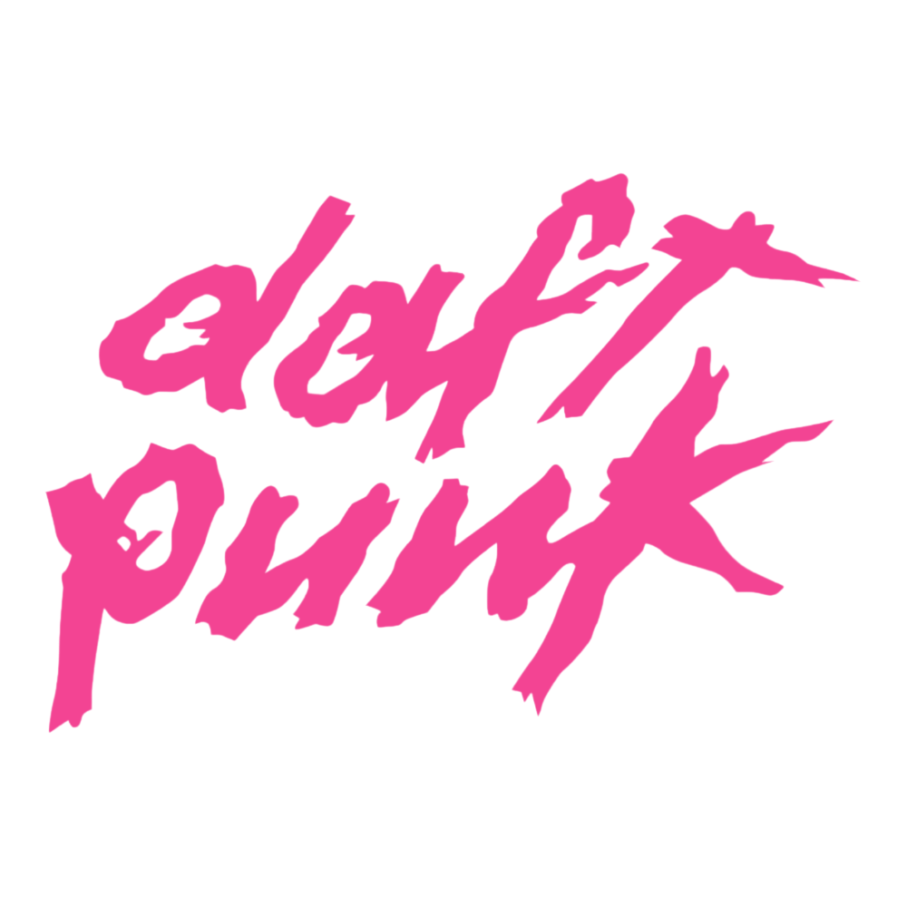
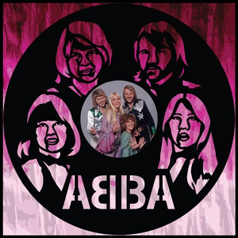
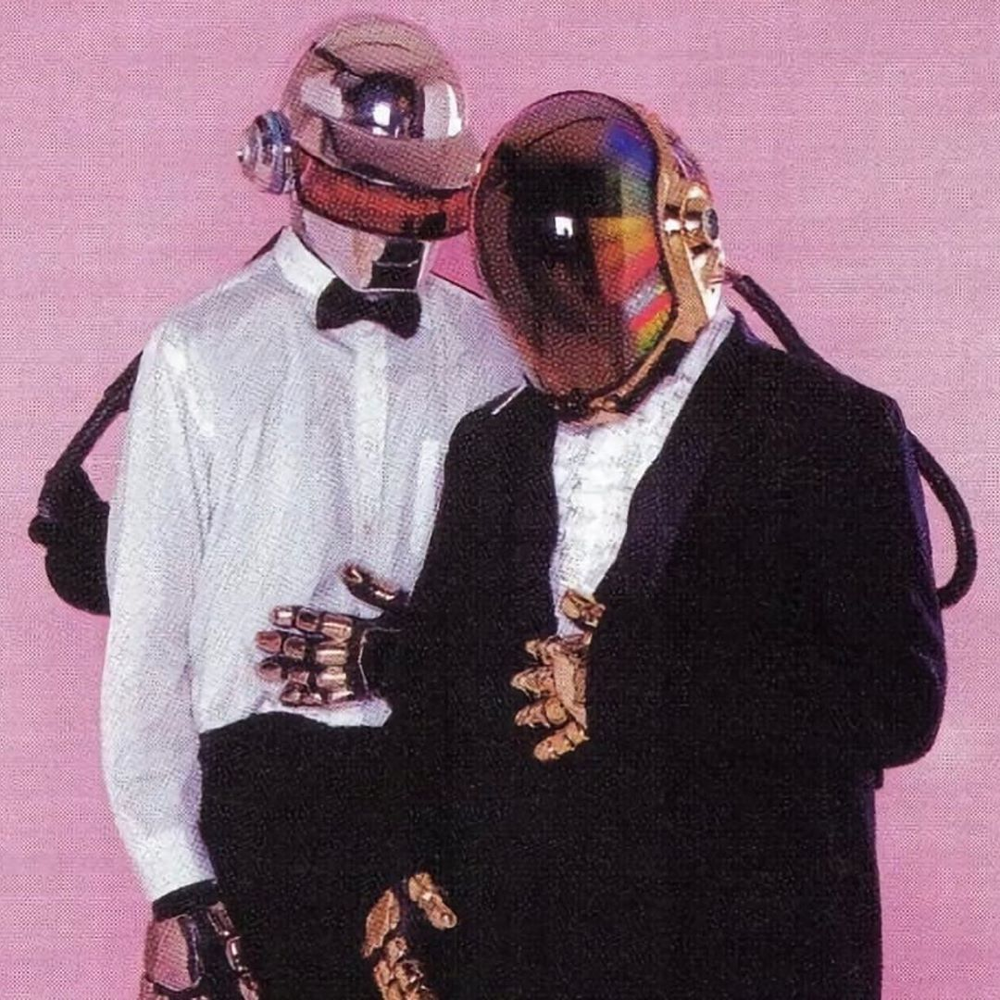
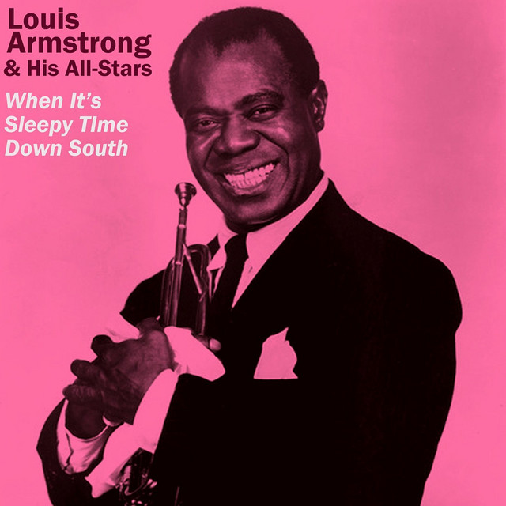

Fiecare gen muzical are artiști și trupe care au contribuit la dezvoltarea și popularitatea sa. Prin stilul lor unic și prin melodiile create, aceștia au influențat milioane de oameni și au devenit simboluri ale muzicii moderne. Artiștii pop sunt cunoscuți pentru melodii accesibile și refrene memorabile, cei din EDM impresionează prin ritmuri energice și utilizarea tehnologiei, iar muzicienii de jazz se remarcă prin improvizație și expresivitate. În această pagină sunt prezentate câteva exemple de trupe și artiști reprezentativi pentru genurile pop, EDM și jazz, care au avut un impact important asupra industriei muzicale.


ABBA este una dintre cele mai celebre formații pop din istorie. Trupa a fost formată în Suedia în anul 1972 și era alcătuită din patru membri: Agnetha Fältskog, Björn Ulvaeus, Benny Andersson și Anni-Frid Lyngstad. Numele formației provine din inițialele prenumelor membrilor. Formația a devenit cunoscută la nivel internațional după câștigarea concursului Eurovision Song Contest 1974 cu melodia „Waterloo”. După acest succes, ABBA a lansat numeroase hituri care au devenit foarte populare în întreaga lume, precum „Dancing Queen”, „Mamma Mia” sau „Take a Chance on Me”. Stilul muzical al trupei se baza pe melodii ritmate, armonii vocale și refrene ușor de reținut. Muzica lor transmite energie și o atmosferă pozitivă, motiv pentru care continuă să fie apreciată chiar și după multe decenii. ABBA a avut o influență majoră asupra muzicii pop și asupra culturii moderne. Melodiile lor sunt folosite în filme, spectacole și musicaluri, iar popularitatea trupei a rămas foarte mare până în prezent. Formația este considerată una dintre cele mai de succes trupe pop din toate timpurile.

Daft Punk a fost un duo francez de muzică electronică format din Thomas Bangalter și Guy-Manuel de Homem-Christo. Cei doi artiști au devenit celebri datorită stilului lor inovator și aparițiilor scenice în care purtau căști și costume futuriste. Muzica lor combină elemente de EDM, house, disco și funk. Stilul lor este caracterizat prin ritmuri puternice, efecte electronice și melodii create cu ajutorul tehnologiei moderne. Printre cele mai cunoscute piese ale duo-ului se numără „One More Time”, „Harder, Better, Faster, Stronger” și „Get Lucky”. Daft Punk a avut un rol foarte important în popularizarea muzicii electronice la nivel mondial. Concertele lor erau cunoscute pentru efectele vizuale impresionante, luminile spectaculoase și atmosfera energetică creată pentru public. Pe lângă succesul comercial, duo-ul a influențat mulți alți artiști și producători muzicali. Ei au demonstrat că muzica electronică poate fi creativă, complexă și apreciată de un public foarte larg. Chiar dacă formația s-a destrămat în anul 2021, Daft Punk rămâne una dintre cele mai importante și influente formații din istoria muzicii EDM.

Louis Armstrong a fost unul dintre cei mai importanți muzicieni din istoria jazzului. El s-a născut în Statele Unite ale Americii și a devenit celebru datorită talentului său de trompetist și cântăreț. Armstrong este considerat unul dintre pionierii jazzului modern și unul dintre artiștii care au contribuit la răspândirea acestui gen muzical în întreaga lume. Stilul său muzical era bazat pe improvizație și expresivitate. În jazz, improvizația este foarte importantă deoarece permite muzicienilor să interpreteze melodiile într-un mod personal și creativ. Louis Armstrong era cunoscut pentru interpretările sale energice și pentru vocea sa răgușită și ușor de recunoscut. Printre cele mai cunoscute melodii interpretate de el se numără „What a Wonderful World” și „Hello, Dolly!”. Aceste piese au devenit foarte populare și sunt ascultate și în prezent. Pe lângă contribuțiile sale muzicale, Armstrong a avut și un impact cultural important. El a demonstrat că muzica poate uni oamenii indiferent de diferențele culturale sau sociale. Astăzi, Louis Armstrong este considerat un simbol al jazzului, iar influența sa asupra muzicii moderne continuă să fie foarte mare.